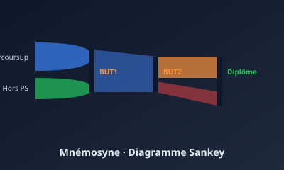

Mnémosyne — Suivi des cohortes étudiantes
« Garder la mémoire, éclairer les parcours »
Plateforme web pour suivre les cohortes des 6 BUT de l'IUT de Villetaneuse, connectée à l'API SCODOC.

Informations clés
Le projet en bref
Mnémosyne est une plateforme web destinée à l'IUT de Villetaneuse pour visualiser le parcours des cohortes d'étudiants à travers les 6 BUT (CJ, GEA, GEII, INFO, RT, SD). L'application se connecte à l'API SCODOC (gestion de la scolarité) pour récupérer les données réelles, puis affiche pour une année et une formation donnée un diagramme de Sankey détaillé : entrants Parcoursup, hors-Parcoursup, redoublants, passerelles, abandons (NAR), validations (ADM/PASD/ADJ), etc.
L'application est structurée en deux parties :
- Consultation — visualiser les cohortes, avec valeurs cliquables permettant de naviguer d'année en année et de descendre dans le détail.
- Administration — partie protégée pour synchroniser les données depuis SCODOC et définir les scénarii (un étudiant passant de BUT2 GEA FI à BUT3 FA — dans quelle case le comptabiliser ?).
Comment ça s'est déroulé
S3 · Démarrage du projet (sept-déc 2025)
Réunion de cadrage avec le client (David Hébert), analyse du cahier des charges, découverte de l'API SCODOC, premières maquettes papier des deux interfaces.
S3 · Architecture et base de données
Choix de Flask + SQLAlchemy. Modélisation de la base pour stocker les inscriptions et les décisions de jury (ADM, PASD, RED, NAR, ADJ). Premières routes API internes.
S3 · Diagramme Sankey
Intégration d'une librairie Sankey en JavaScript. Premier rendu avec données factices, puis branchement sur les données réelles. Plusieurs itérations sur le rendu visuel.
S3 · Soutenance et bilan
Démo devant le client : version fonctionnelle mais incomplète. Beaucoup d'idées pour le S4 (consultation cliquable, partie admin, scénarii).
S4 · Analyse de l'existant (jan-fév 2026)
Comparaison de toutes les productions S3 (la nôtre + celles des autres équipes) selon plusieurs critères : adéquation au besoin, qualité du code, technologies, facilité de reprise. Document de synthèse partagé.
S4 · Reprise et amélioration
Fork du projet retenu, amélioration de l'architecture, finalisation des fonctionnalités manquantes, traitement des cas particuliers (passerelles, basculement FI/FA…).
S4 · Soutenance finale
Démonstration d'un produit fini, utilisable par un vrai utilisateur (administrateur IUT).
Mon avis personnel
Au S3, on a passé beaucoup de temps à comprendre le métier (qu'est-ce qu'un PASD ? quelle différence entre ADM et ADJ ?). J'ai compris à ce moment qu'un développeur n'est utile que s'il comprend le domaine de son client.
Au S4, l'exercice est différent : il faut analyser le travail des autres, en évaluer la reprenabilité, et oser changer de base si besoin. C'est un exercice très professionnel, qui ressemble à ce que j'ai vécu chez Marchés BTP en stage. Au final, ce projet m'a appris à raisonner en termes de produit fini, pas juste de rendu d'évaluation.